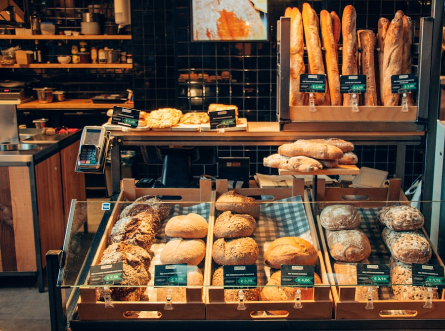

Sweet
Butter Croissant
ครัวซองต์เนยแท้ layers สวย กรอบนอกนุ่มใน หอมแบบร้านอบ artisan
ส่วนผสม: แป้งสาลี, เนยแท้, นมสด, ยีสต์, น้ำตาล, เกลือ
คาร์บ: ประมาณ 47g ต่อ 100 กรัม
Full menu
รวมเมนูยอดนิยมที่เหมาะทั้งสำหรับมื้อเช้า กาแฟช่วงบ่าย และซื้อกลับบ้าน
ครัวซองต์เนยแท้ layers สวย กรอบนอกนุ่มใน หอมแบบร้านอบ artisan
ส่วนผสม: แป้งสาลี, เนยแท้, นมสด, ยีสต์, น้ำตาล, เกลือ
คาร์บ: ประมาณ 47g ต่อ 100 กรัม

ขนมปังนุ่มไส้ครีมนมเนย หวานกำลังดี หอมและกินง่าย
ส่วนผสม: แป้งขนมปัง, นมสด, เนย, ไข่, น้ำตาล, ครีมนม
คาร์บ: ประมาณ 52g ต่อ 100 กรัม

ขนมปังแผ่นญี่ปุ่นเนื้อฟู สำหรับ toast และ sandwich
ส่วนผสม: แป้งขนมปัง, นมสด, เนย, ยีสต์, ไข่, น้ำตาล
คาร์บ: ประมาณ 44g ต่อ 100 กรัม

โรลเค้กนุ่ม ๆ ไส้ครีมสตรอว์เบอร์รี กลิ่นหอมหวานละมุน
ส่วนผสม: แป้งเค้ก, ไข่, นมสด, ครีม, สตรอว์เบอร์รี
คาร์บ: ประมาณ 41g ต่อ 100 กรัม

ขนมปังไส้กระเทียมชีส หอมเข้มข้น กินตอนอุ่น ๆ คือที่สุด
ส่วนผสม: แป้งขนมปัง, เนยกระเทียม, ชีสมอสซาเรลลา, พาร์สลีย์
คาร์บ: ประมาณ 38g ต่อ 100 กรัม

ขนมปังโฮลวีตเนื้อแน่นนุ่ม เหมาะสำหรับคนชอบโทนสุขภาพ
ส่วนผสม: แป้งโฮลวีต, แป้งขนมปัง, นมสด, น้ำผึ้ง, ยีสต์
คาร์บ: ประมาณ 49g ต่อ 100 กรัม

บันอบเชยกลิ่นหอมหวาน รสละมุน กินคู่ชาหรือกาแฟคือดีมาก
ส่วนผสม: แป้งสาลี, เนย, อบเชย, น้ำตาลทรายแดง, นมสด
คาร์บ: ประมาณ 56g ต่อ 100 กรัม

บันนุ่มสอดไส้แฮมและชีส อิ่มท้อง เหมาะกับมื้อเช้าแบบเร็ว ๆ
ส่วนผสม: แป้งขนมปัง, แฮม, ชีส, ไข่, นมสด, เนย
คาร์บ: ประมาณ 34g ต่อ 100 กรัม
บันไส้คัสตาร์ดวานิลลาหอม ๆ เนื้อครีมเนียนนุ่ม กลมกล่อม
ส่วนผสม: แป้งขนมปัง, คัสตาร์ด, วานิลลา, ไข่, นมสด
คาร์บ: ประมาณ 43g ต่อ 100 กรัม
ขนมปังกล้วยหอมเนื้อชุ่มนุ่ม กลิ่นหอมธรรมชาติ กินได้ทั้งเช้าและบ่าย
ส่วนผสม: กล้วยหอม, แป้งสาลี, ไข่, เนย, น้ำตาลทรายแดง
คาร์บ: ประมาณ 46g ต่อ 100 กรัม
Nutrition detail